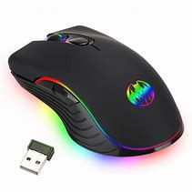

R$ 200
A Logitech projeta produtos e experiências que ocupam um lugar cotidiano na vida das pessoas, com foco na inovação e na qualidade. Seu objetivo é criar momentos verdadeiramente únicos e significativos para os seus usuários. Os mouses da Logitech se adaptam à forma da sua mão para lhe proporcionar horas de conforto. Sem a necessidade de mover o braço para deslizar o cursor, sua mão ficará menos cansada. Eles são ideais para qualquer espaço de trabalho e para aqueles que têm a mesa cheia de vários objetos. Adaptado aos seus movimentos Seu design eficaz o torna num mouse confortável, com uma grande experiência de uso para aqueles que estão procurando segurança em cada clique. A funcionalidade ao alcance da sua mão O sistema de detecção de movimento óptico lhe permitirá mover o cursor de uma forma mais precisa e sensível do que os sistemas tradicionais. Plug And Play Basta colocar o receptor em uma porta USB do computador e você pode começar a usá-lo. Não é preciso emparelhar o mouse ou baixar um software para usá-lo. Tecnologia sem fio Trabalhe sem fio e mova-se livremente sem nenhuma interrupção. Como não há cabos, seu escritório fica limpo. Além disso, você pode facilmente levar o mouse de um espaço de trabalho para outro. Adequado para fácil transporte Navegue rapidamente pelos documentos e sites da web graças ao seu design ultra-fino, ergonômico, leve e conveniente para transportar onde você quiser ou viajar.